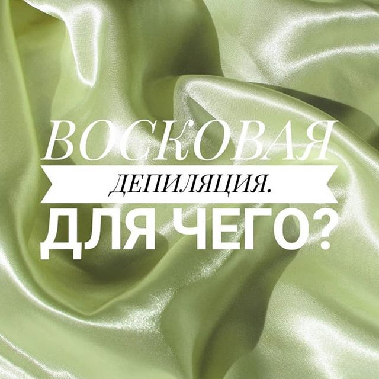
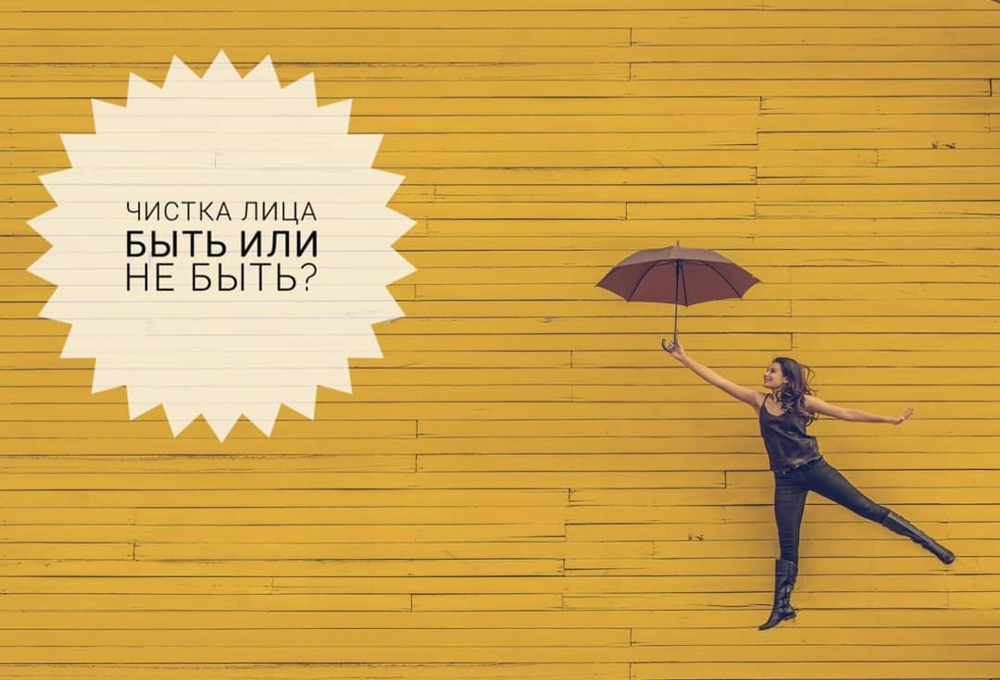
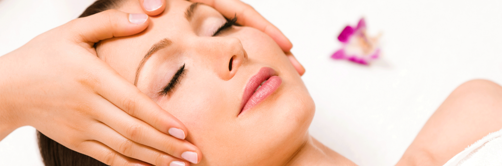
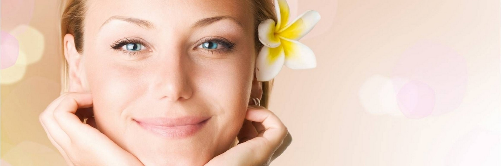
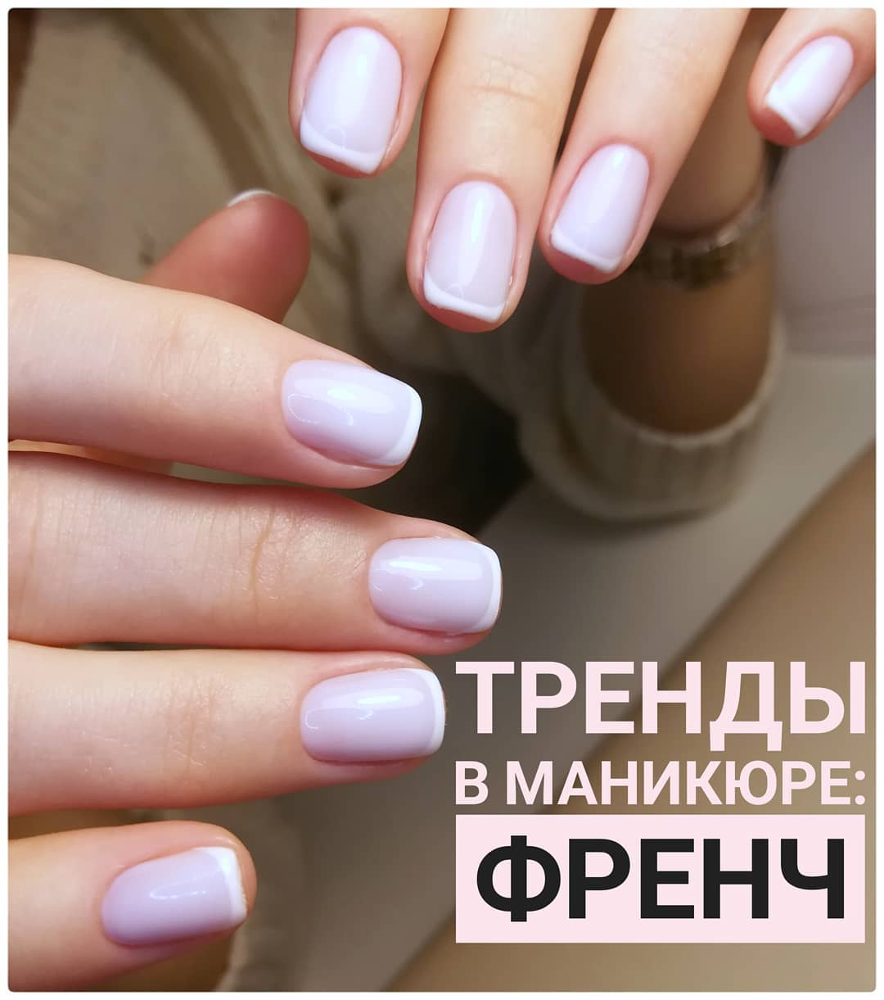

Знакомьтесь, наш мастер по маникюру Валерия 🌼

Знакомьтесь, наш мастер-косметик Елена 🌼
💎 Сертифицированный косметолог-эстетист
💎 Если Елена не с клиентом в кабинете, то явно на очередном обучении или семинаре🤓
💎 Виртуозно делает "разбор косметички/кремов/умывалок" своих клиенток, подходят они или нет для домашнего ухода (с удовольствием разберёт и вашу косметику😏)
💎 Входит в состояние нирваны, когда делает массаж клиенту
💎 Эстетист в кабинете, эстет в жизни✨
💎 Елена всегда рада и открыта новым клиентам.
А это мы 💛

В кабинете маникюрных и косметических услуг "12" работают мама и дочь 😊
☀️ Нам удается гармонично совмещать роли родственников и коллег
☀️ Мы очень разные, но движемся в одном направлении
☀️ Записываемся друг к другу на процедуры красоты 😊
☀️ Тестируем новую косметику и материалы сначала на себе, а уже потом вводим в работу с клиентами 😊
☀️ Любим и развиваем свое маленькое, но очень гордое дело - наш Кабинет "12" 💜
Восковая депиляция

ДЛЯ ЧЕГО:
🌺 избавиться от жёстких, забритых волосков
🌺 гладкая и мягкая кожа - мечта всех женщин. Да и мужчин тоже ✔️👀 💕
🌺 возможность носить откровенное красивое белье
🌺 психологический комфорт и свобода движений
🌺 всегда в режиме готовности: будь то вылазка на пикник, поход в бассейн, поездка к морю либо неожиданная встреча с Кристианом Греем))) 👌
КОГДА:
🌺 Сразу после КД, ориентировочно на 7-10 день цикла. В этот период болевые ощущения снижаются.
✔️ И да. Одного раза в месяц вполне достаточно.
⠀
ПЛЮСЫ:
👍 продолжительность эффекта
👍 небольшие затраты времени
👍 замедление роста волос при регулярном проведении процедуры
👍 относительно низкая стоимость.
Чистка лица. Быть или не быть?

🌟Процедура чистки лица великолепно подходит для любой кожи: жирной, сухой, проблемной или возрастной. Даже если нет особых проблем с кожей, просто хочется её очистить чуть больше, чем получается в домашних условиях.
☝️Но нужно иметь в виду, что у каждого своя реальная надобность в чистке кожи и её периодичность. Для кого-то один раз в два месяца будет оптимальным. А кому-то предложат прийти через две недели, т. к. за один раз не получится вычистить все элементы, от которых хочется избавиться.
ЧТО ДАЁТ ПРОЦЕДУРА ЧИСТКИ ЛИЦА:
💎Глубокое очищение и мягкое отшелушивание ороговевших частиц
💎Освобождение пор от сальных пробок
💎Сокращение размера пор
💎Улучшение цвета лица
💎Кожа становится мягкой и эластичной
💎Косметические препараты воспринимаются кожей гораздо эффективней
💎Ваша кожа дышит и сияет.
ЧТО НУЖНО ЗНАТЬ:
❗Есть противопоказания для чистки (кожные заболевания, гипертоническая болезнь, бронхиальная астма, критические дни).
❗При некотором характере высыпаний и количестве воспалительных элементов, чистка возможна только после консультации врача-дерматолога и его разрешения на проведение этой процедуры.
⠀
✔️После чистки нужно следовать рекомендациям.
Они просты и их не так много:
В течении 6-12 часов после процедуры не умывать лицо, не пользоваться декоративной косметикой, не посещать тренажёрный зал, бассейн, избегать раздражающего воздействия пара и пыли (не готовить на 10 человек и не затевать генеральную уборку). Сменить наволочки и полотенце.
✔️Чистка - это не панацея и не решение всех проблем. Это помощь коже и верный шаг к улучшению её состояния и внешнего вида.
✔️При хорошем домашнем уходе и регулярном посещении специалиста вы получите максимальный результат.
Раздеваться? Зачем? Это же массаж лица...

Да, вроде все так. Но... Помните, как в "Маленьком принце"? "В действительности все совершенно иначе, чем на самом деле".
Почему все таки массаж не только лица, но и зон шеи и декольте? Жизнь в современном мире полна стрессовых ситуаций и, как бы это странно не звучало в одном предложении, сидячего образа жизни.
Недосып, автомобиль, компьютер, офис, нервное напряжение и ещё много причин, чтобы появился гипертонус мышц шеи.
Напряжённые мышцы шеи сдавливают сосуды, нарушается кровообращение головного мозга. Как следствие - головные боли, нарушение сна и плохое самочувствие.
Вид усталый, лицо осунулось, проявились морщины, поплыл овал лица, начал формироваться второй подбородок... Первая мысль: "Старею..."
А на самом деле, из-за напряжения мышц шеи, нарушился венозный отток и отток лимфы.
Массаж прекрасно справляется с этими задачами :
🌺 расслабляет напряжённые мышцы
🌺 убирает отёки
🌺 выводит токсины
🌺 улучшает цвет лица
🌺 уменьшает видимые морщины
🌺 повышает тонус кожи.
А так как мышцы декольте вообще слабо развиты, массаж позволяет повысить тургор кожи, чтобы не допустить морщин и дряблости в этой зоне, которая чаще всего у нас открыта.
Поэтому и говорят, что "женское лицо заканчивается на груди". Это наша визитная карточка) 💞 Позвольте себе быть очаровательными! 👒
Скажите, в чём секрет вашей молодости?- Мне 20 лет.

😂 Картина маслом))) Конечно, ну кто в 20 лет говорит: "Мне бы профилактику, а то постарею быстро..."
В этом возрасте, куда ни посмотри, все красавицы: кожа упругая, сияет, прям наполнена природной красотой 👸!
Но, замечаете ли вы, что вокруг так много красивых девушек и так мало красивых женщин, скажем за 40-50?
Мне оооочень нравятся ухоженные женщины!. От них прям веет внутренним спокойствием, любовью💖 и благородством 👑. Они изучают какой-то невероятный свет🌟.
Безусловно, это результат многолетней заботы о себе. А забота - это инвестиция))) Поэтому, ориентировочно до 25 лет мы наслаждаемся тем, что дала нам природа. А дальше - выбор за нами.
Предлагаю стратегию инвестиции в себя на примере массажа )👈
☘️ Итак, до 25 лет массаж лица возможен при наличии каких-либо показаний. Например, лечебный при акне.
☘️ С 25 до 30 лет массаж лица делают небольшими курсами. Скорее для профилактики старения, но может и по индивидуальным показаниям.
☘️ И уже с 30 лет массаж лица должен стать неотъемлемой частью домашнего (самомассаж) и салонного ухода.
Это как фитнес 🤸♀️. Только для лица. Можно заниматься самостоятельно. Изучить техники проведения самомассажа и противопоказания к ним, запастись терпением и дисциплиной 🧘♀️.
А можно доверить себя специалисту, в арсенале которого есть множество разных техник, которые он постоянно совершенствует💆♀️.
🧚♀️
Наш специалист составит индивидуальную программу, которая максимально точно подходит состоянию вашей кожи, мышц и сосудов, наличию тех либо иных показаний.
Уже после одного сеанса вы увидите и оцените первый результат 👍.
☀️ Это может быть и разовая процедура. Например, перед торжеством. Эффект будет длиться до 3-4 дней.
☀️ Но для получения стойкого результата необходим курс 10-15 процедур 2-3 раза в неделю. Такой интенсив проводится 2 раза в год, обычно в межсезонье, весной и осенью. Между курсами - профилактические сеансы 1-2 раза в месяц.
Сколько бы вы ни уделили себе времени, ваша внешность вам скажет спасибо)
Позвольте себе быть очаровательными! 👒
Френч - классика и тренд в одном маникюре 💅
